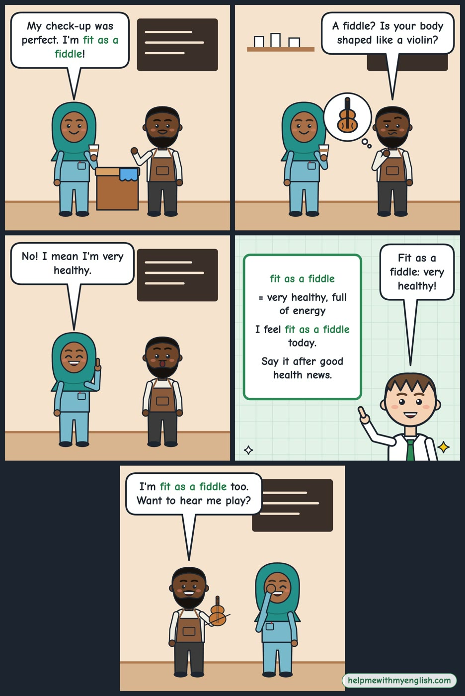

fit as a fiddle
Very healthy and strong.
After a month at the gym, I feel as fit as a fiddle.
Tip: Use it with 'as fit as a fiddle' after 'feel', 'be' or 'look' to describe someone's health; it often comes up when talking about recovery or older people who are doing well.
Hear it in conversation
OlenaHi Kofi! How was your appointment yesterday? You looked worried last week.
KofiIt went really well, actually. The doctor did all the tests and said my knee has healed completely.
OlenaThat's a relief. So you can start running again?
KofiYes! She said I'm as fit as a fiddle, so I'm signing up for the 10K in spring.
OlenaGreat news. I'll train with you if you don't mind a slower partner.
Workbook
1. What does it mean?
In this conversation, what does 'as fit as a fiddle' mean?
2. Fill the gap
My grandmother is eighty-five, but she still walks to the market every day and is .
3. Choose the best reply
Amira: I haven't seen you since you had that nasty flu. How are you feeling now?
4. Your turn: speak
Do you do anything to stay healthy? Tell me about your habits.
Show an example answer
I try to walk for about forty minutes every morning and I cook at home most nights. It isn't anything extreme, but after a few months I feel as fit as a fiddle, and I have much more energy at work.
Answer key: fit as a fiddle
- 1. D. In very good health and physically well
- 2. as fit as a fiddle
- 3. A. Much better, thanks. I'm as fit as a fiddle again.
- 4. Example: I try to walk for about forty minutes every morning and I cook at home most nights. It isn't anything extreme, but after a few months I feel as fit as a fiddle, and I have much more energy at work.
See it in a comic
